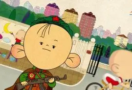

| 动漫介绍 | 人物简介 | 剧情简介 | 图片欣赏 | 动漫欣赏 | 在线留言 |
|
|||||||
|
|||||||
| 大耳朵图图欢乐剧情 |
| 人物性格很有特色吗？ |
| 《大耳朵图图》在第1季播出后收视率创下中国动画片新高，牢牢占据收视亚军的地位。2005年，被广电总局评为年度十部优秀国产动画片，推荐全国电视台优先播出的关注后，萌发了创作这部电影的想法。他希望通过这部电影表达对于生命和家庭的珍视，以及对于人类之间联系和情感的探索。同时，他也想呈现出日本传统文化和现代文明的融合，以及东京和乡村之间的差异和联系。这些元素都在电影中得到了很好的体现，成为了该电影受欢迎的重要原因之一。 胡图图是一个机灵，淘气聪明的三岁小孩，他天生快乐，心地善良，喜欢多管闲事，精力充沛，对周围的事物非常好奇，并且还有自己独特的见解和超强想象力，他的言行常常让人大跌眼镜。他爱胡思乱想，最大的特点就是好吃，每次一提到说到考试就能想到烤红薯和羊肉串，为了有零食吃可以做出违背自己原则的事情，他的可爱和自作聪明让每个人忍俊不禁 。 |
|  |
| 语言揭秘 |
| 家庭关系和睦 |
孩子从无知到有知，是一个漫长而琐碎的学习、探索过程，对每一位父母来说，都会经历其中的喜悦和烦恼。 妈妈最伤脑筋的是不知道自己的儿子图图到底是聪明还是笨。 称呼图图爸叫“英俊”，不高兴大吼：胡英俊！ 白底彩色的小猫。图图的生日礼物，后来成为图图的好朋友。因为它只吃蔬菜很神奇，所以图图叫它小怪。和图图一样平凡、淘气，会说话，但是只让图图一个人知道。 图图爷爷是个善良倔强的农村老头，有着和图图一样的大耳朵。总爱带些农村的小动物给图图，祖孙关系非常亲密。 |
| 胡图图和他的猫 |
| 好朋友刷子 |
因为谐音，又因为有一头桀骜不逊的头发被糊里糊涂的图图叫成了刷子，刷子因此和图图结仇，对图图百般捉弄，直到发现图图和她一样都不吃番茄才一笑泯恩仇，两人从此成为朋友，在别人眼里图图的荒唐之处都被刷子惊异地看成了优点和与自己的相同之处，一对搭档就此形成。刷子胆大，图图糊涂，两人互相欣赏，闯祸无数。刷子最看不起的人是小美，认为这种唧唧歪歪的小女孩要多没意思有多没意思。图图却和所有男生一样，虽然看重友情，仍是钟情小美。 刷子最烦穿裙子，好不容易穿上一条很酷的牛仔裙却万分不满意，觉得自己像个娇滴滴的小傻妞。 刷子有个胆小如鼠的妈妈，经常被自己女儿的恶作剧吓哭。 刷子的口头禅：“难道不是么？！” |
大耳朵图图 |